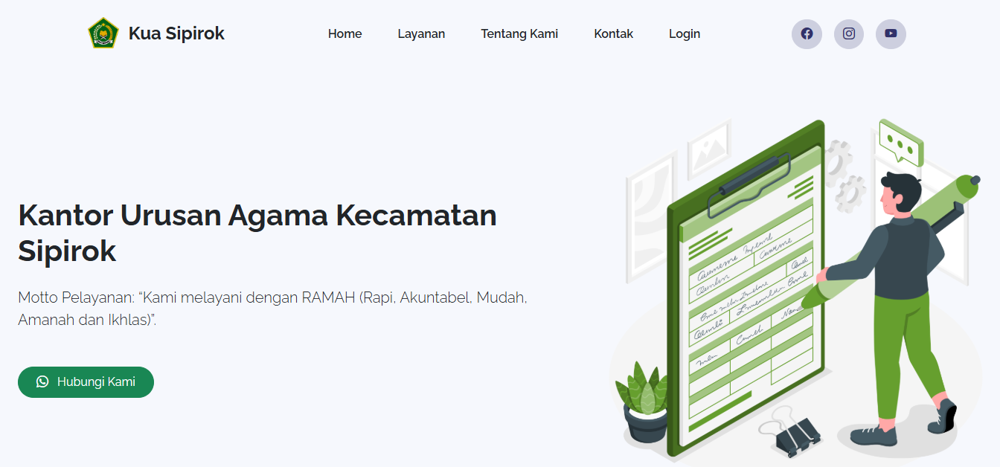

Project Details
Sistem Informasi Pendaftaran Pernikahan
Sistem Informasi Pendaftaran Pernikahan yang dikembangkan untuk masyarakat yang ingin menikah dengan mendaftar di sistem.
5
Technologies
2
Fitur Utama
Teknologi yang Digunakan
PHP
Laravel
MySQL
Bootstrap 5
JavaScript

Fitur Utama
- Pendaftaran Pernikahan
- Pengelolaan data pernikahan